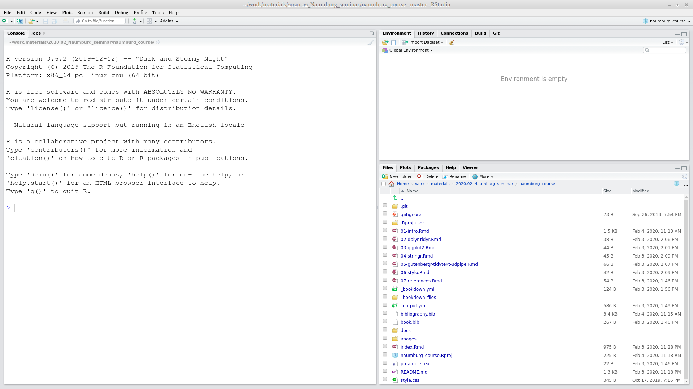

2 Введение в R и RStudio
2.1 Введение
2.1.1 Что такое data science?
Data science (по-русски говорят по-разному: анализ данных, дата сайенс, дата-сатанизм и др.) — достаточно новая область, которая активно развивается в последнее время. Эта область объеднияет компьютерные науки, матемтаику и статистику, но вот сколько науки в data science трудно оценить. Во многих научных направлениях появляются новые подобласти, вдохнавленные парадигмой data science:
- Биоинформатика
- Криминологический анализ данных
- Цифровые гуманитарные исследования
- Дата журналистиика
- Медицина основонная на данных
- …
Пишутся все больше книг “Data Science for …”:
- psychologists (Hansjörg 2019)
- immunologists (Thomas and Pallett 2019)
- business (Provost and Fawcett 2013)
- public policy (Brooks and Cooper 2013)
- fraud detection (Baesens, Van Vlasselaer, and Verbeke 2015)
- …
Люди практикующие data science должны уметь следующее:
- получить данные
- модифицировать данные
- визуализировать данные
- создать статитстическую модель, основанную на данных или запустить некоторые
- поделиться и представить результаты работы
- организовать весь процесс воспроизводимым образом
2.1.2 Почему R?
R (R Core Team 2019) — это язык программирования с большой инфраструктурой пактов, которые помогают в самых разных областях науки и компьютерных технологий.
Конечно, есть альтернативы:
- Python (VanderPlas 2016; Grus 2019)
- Julia (Bezanson et al. 2017)
- bash (Janssens 2014)
- java (Brzustowicz 2017)
- …
Ответы на проблемы в R можно найти:
- книга онлайн “R for data science” (Wickham 2016)
- R community
- stackoverflow
- любой удобный поисковик
- …
2.2 Introduction to RStudio
R is the programming language. RStudio is the most popular IDE (Integrated Development Environment) for R language.
When you open RStudio for the first time you can see something like this:

When you press  button at the top of the left window you will be able to see all four panels of RStudio.
button at the top of the left window you will be able to see all four panels of RStudio.

2.3 R as a calculator
Lets first start with the calculator. Press in R console
## [1] 11## [1] -550## [1] 27## [1] 3## [1] 9.5## [1] 9.5## [1] 3.141593Remainder after division
## [1] 1So you are ready to solve some really hard equations (round it four decimal places):
\[\frac{\pi+2}{2^{3-\pi}}\]
üìã list of hints ➡
üëÅ Are you sure that you rounded the result? ➡
I expect the answer to be rounded to four decimal places:0.87654321 becomes 0.8765.üëÅ Are you sure you didn‚Äôt get into the brackets trap? ➡
Even though there isn’t any brackets in the mathematical notation, you need to add them in R, otherwise the operation order will be wrong.2.5 Functions
The most important part of R is functions: here are some of them:
## [1] 2## [1] 5## [1] 1## [1] -1## [1] 14## [1] 135## [1] -0.841471Each function has a name and zero or more arguments. All arguments of the function should be listed in parenthesis and separated by comma:
## [1] 3.141593## [1] 3.14Each function’s argument has its own name and serial number. If you use names of the function’s arguments, you can put them in any order. If you do not use names of the function’s arguments, you should put them according the serial number.
## [1] 3.14## [1] 3.14## [1] 3.14## [1] 3.14## [1] 3.14## [1] 2There are some functions without any arguments, but you still should use parenthesis:
## [1] "2020-04-13"## function ()
## as.Date(as.POSIXlt(Sys.time()))
## <bytecode: 0x5767144343a0>
## <environment: namespace:base>Each function in R is documented. You can read its documentation typing a question mark before the function name:
Explore the function log() and calculate the following logarithm:
\[\log_3(3486784401)\]
üìã list of hints ➡
üëÅ A-a-a! I don‚Äôt remember anything about logarithms‚Ķ ➡
The logarithm is the inverse function to exponentiation. That means the logarithm of a given number x is the exponent to which another fixed number, the base b, must be raised, to produce that number x.
üëÅ What does this small 3 in the task mean? ➡
This is the base of the logarithm. So the task is: what is the exponent to which another fixed number, the base 3, must be raised, to produce that number 3486784401.2.6 Variables
Everything in R can be stored in a variable:
 As a result, no output in the Console, and a new variable x appear in the Environment window. From now on I can use this new variable:
As a result, no output in the Console, and a new variable x appear in the Environment window. From now on I can use this new variable:
## [1] 22## [1] 29All those operations don’t change the variable value. In order to change the variable value you need to make a new assignment:
The fast way for creating <- in RStudio is to press Alt - on your keyboard.
It is possible to use equal sign = for assignment operation, but the recommendations are to use arrow <- for the assignment, and equal sign = for giving arguments’ value inside the functions.
For removing vector you need to use the function rm():
## Error in eval(expr, envir, enclos): object 'x' not found2.6.1 Variable comparison
It is possible to compare different variables
## [1] FALSE## [1] TRUE## [1] TRUE## [1] TRUE## [1] TRUE## [1] FALSEOperator ! can work by itself changing logical values into reverse:
## [1] FALSE## [1] TRUE2.7 Vector
An R object that contains multiple values of the same type is called vector. It could be created with the command c():
## [1] 3.000000 0.000000 3.141593 23.400000 -53.000000## [1] "Kraków" "Warszawa" "Cieszyn"## [1] FALSE FALSE TRUE## [1] 2 3 4 5 6 7For the number sequences there is an easy way:
## [1] 1 2 3 4 5 6 7 8 9 10## [1] 3 2 1 0 -1 -2 -3 -4 -5From now on you can understand that everything we have seen before is a vector of length one. That is why there is [1] in all outputs: it is just an index of elements in a vector. Have a look here:
## [1] 1 2 3 4 5 6 7 8 9 10 11 12 13 14 15 16 17 18 19 20 21 22 23 24 25
## [26] 26 27 28 29 30 31 32 33 34 35 36 37 38 39 40 41 42 43 44 45 46 47 48 49 50
## [51] 51 52 53 54 55 56 57 58 59 60## [1] 60 59 58 57 56 55 54 53 52 51 50 49 48 47 46 45 44 43 42 41 40 39 38 37 36
## [26] 35 34 33 32 31 30 29 28 27 26 25 24 23 22 21 20 19 18 17 16 15 14 13 12 11
## [51] 10 9 8 7 6 5 4 3 2 1There is also a function seq() for creation of arithmetic progressions:
## [1] 1 2 3 4 5 6 7 8 9 10 11 12 13 14 15 16 17 18 19 20## [1] 1 2 3 4 5 6 7 8 9 10 11 12 13 14 15 16 17 18 19 20## [1] 2 15 28 41 54 67 80 93
Use the argument length.out of function seq() and create an arithmetic sequence from \(\pi\) to \(2\pi\) of length 50.
There are also some built-in vectors:
## [1] "a" "b" "c" "d" "e" "f" "g" "h" "i" "j" "k" "l" "m" "n" "o" "p" "q" "r" "s"
## [20] "t" "u" "v" "w" "x" "y" "z"## [1] "A" "B" "C" "D" "E" "F" "G" "H" "I" "J" "K" "L" "M" "N" "O" "P" "Q" "R" "S"
## [20] "T" "U" "V" "W" "X" "Y" "Z"## [1] "January" "February" "March" "April" "May" "June"
## [7] "July" "August" "September" "October" "November" "December"## [1] "Jan" "Feb" "Mar" "Apr" "May" "Jun" "Jul" "Aug" "Sep" "Oct" "Nov" "Dec"2.7.1 Vector coercion
Vectors are R objects that contain multiple values of the same type. But what if we merged together different types?
## [1] "1" "34"## [1] 1 1## [1] "TRUE" "34"It is clear that there is a hierarchy: strings > double > logical. It is not universal across different programming languages. It doesn’t correspond to the amount of values of particular type:
## [1] "1" "2" "3" "34"## [1] 1 1 0 0The same story could happen during other operations:
## [1] 62.7.2 Vector operations
All operations, that we discussed earlier, could be done with vectors of the same length:
## [1] 7 9 11 13 15## [1] -5 -5 -5 -5 -5## [1] 6 14 24 36 50There are operations where the vector of any length and vector of length one is involved:
## [1] 8 9 10 11 12## [1] -6 -5 -4 -3 -2## [1] 0.1428571 0.2857143 0.4285714 0.5714286 0.7142857There are a lot of functions in R that are vectorised. That means that applying this function to a vector is the same as applying this function to each element of the vector:
## [1] 0.8414710 0.9092974 0.1411200 -0.7568025 -0.9589243## [1] 1.000000 1.414214 1.732051 2.000000 2.236068## [1] 5 4 3 2 1 0 1 2 32.7.3 Indexing vectors
How to get some value or banch of values from a vector? You need to index them:
## [1] 23.4## [1] "Warszawa"It is possible to have a vector as index:
## [1] 3 0## [1] "Kraków" "Cieszyn"It is possible to index something that you do not want to see in the result:
## [1] "Kraków" "Cieszyn"## [1] 0.000000 3.141593 -53.000000It is possible to have other variables as an index
## [1] 3.141593 0.000000## [1] "Cieszyn" "Warszawa"It is possible to index with a logical vector:
## [1] 3.000000 3.141593 23.400000That means that we could use TRUE/FALSE-vector produced by comparison:
## [1] 3.000000 3.141593 23.400000It works because x > 2 is a vector of logical values:
## [1] TRUE FALSE TRUE TRUE FALSEIt is possible to use ! operator here changing all TRUE values to FALSE and vice versa.
## [1] 0 -53
How many elements in the vector g if expression g[pi < 1000] does not return an error?
2.7.4 NA
Sometimes there are some missing values in the data, so it is represented with NA
## [1] NA## [1] 1 NA 9## [1] "Kraków" NA "Cieszyn"## [1] TRUE FALSE NAIt is possible to check, whether there are missing values or not
## [1] FALSE TRUE FALSE## [1] FALSE FALSE FALSESome functions doesn’t work with vecotors that contain missed values, so you need to add argument na.rm = TRUE:
## [1] NA## [1] 5## [1] 1## [1] 9## [1] 5## [1] 1 92.8 Packages
The most important and useful part of R is hidden in its packages. Everything that we discussed so far is basic R functionality invented back in 1979. Since then a lot of different things changed, so all new practices for data analysis, visualisation and manipulation are packed in packages. During our class we will learn the most popular “dialect” of R called tidyverse.
In order to install packages you need to use a command. Let’s install the tidyverse package:
For today we also will need the readxl package:
After you have downloaded packages nothing will change. You can not use any fucntionality from packages unless you load the package with the library() function:
## ── Attaching packages ────────────────────────────────────────── tidyverse 1.3.0 ──## ✓ ggplot2 3.3.0 ✓ purrr 0.3.3
## ✓ tibble 3.0.0 ✓ dplyr 0.8.5
## ✓ tidyr 1.0.2 ✓ stringr 1.4.0
## ✓ readr 1.3.1 ✓ forcats 0.5.0## ── Conflicts ───────────────────────────────────────────── tidyverse_conflicts() ──
## x dplyr::filter() masks stats::filter()
## x dplyr::lag() masks stats::lag()Not loading a package is the most popular mistake of my students. So remember:
install.packages("...")is like you are buying a screwdriver set;library("...")is like you are starting to use your screwdriver.

For the further lectures we will need tidyverse package.
Please install tidyverse package and load it.
2.8.1 tidyverse
The tidyverse is a set of packages:
tibble, for tibbles, a modern re-imagining of data frames — analogue of tables in Rreadr, for data importdplyr, for data manipulationtidyr, for data tidying (we will discuss it later today)ggplot2, for data visualisationpurrr, for functional programming
2.9 Dataframe (tibble)
A data frame is a collection of variables of the same number of rows with unique row names. Here is an example dataframe with the Tomm Moore filmography:
moore_filmography <- tibble(title = c("The Secret of Kells",
"Song of the Sea",
"Kahlil Gibran's The Prophet",
"The Breadwinner",
"Wolfwalkers"),
year = c(2009, 2014, 2014, 2017, 2020),
director = c(TRUE, TRUE, TRUE, FALSE, TRUE))
moore_filmographyThere are a lot of built-in dataframes:
You can find information about them:
Dataframe consists of vectors that could be called using $ sign:
## [1] 2009 2014 2014 2017 2020## [1] "The Secret of Kells" "Song of the Sea"
## [3] "Kahlil Gibran's The Prophet" "The Breadwinner"
## [5] "Wolfwalkers"It is possible to add a vector to an existing dataframe:
There are some useful functions that tell you somethig about a dataframe:
## [1] 5## [1] 4## title year director producer
## Length:5 Min. :2009 Mode :logical Mode :logical
## Class :character 1st Qu.:2014 FALSE:1 FALSE:1
## Mode :character Median :2014 TRUE :4 TRUE :4
## Mean :2015
## 3rd Qu.:2017
## Max. :2020## tibble [5 × 4] (S3: tbl_df/tbl/data.frame)
## $ title : chr [1:5] "The Secret of Kells" "Song of the Sea" "Kahlil Gibran's The Prophet" "The Breadwinner" ...
## $ year : num [1:5] 2009 2014 2014 2017 2020
## $ director: logi [1:5] TRUE TRUE TRUE FALSE TRUE
## $ producer: logi [1:5] TRUE TRUE FALSE TRUE TRUEWe will work exclusively with dataframes. But it is not the only data structure in R.
How many rows are in the iris dataframe?
How many columns are in the mtcars dataframe?
2.9.1 Indexing dataframes
Since dataframes are two-dimensional objects it is possible to index its rows and columns. Rows are the first index, columns are the second index:
2.10 Data import
2.10.1 .csv files
A .csv files (comma-separated values) is a delimited text file that uses a comma (or other delemeters such as tabulation or semicolon) to separate values. It is broadly used bacause it is possible to parse such a file using computers and people can edit it in the Office programs (Microsoft Excel, LibreOffice Calc, Numbers on Mac). Here is our moore_filmography dataset in the .csv format:
title,year,director,producer
The Secret of Kells,2009,TRUE,TRUE
Song of the Sea,2014,TRUE,TRUE
Kahlil Gibran's The Prophet,2014,TRUE,FALSE
The Breadwinner,2017,FALSE,TRUE
Wolfwalkers,2020,TRUE,TRUELet’s create a variable with this file:
our_csv <- "title,year,director,producer
The Secret of Kells,2009,TRUE,TRUE
Song of the Sea,2014,TRUE,TRUE
Kahlil Gibran's The Prophet,2014,TRUE,FALSE
The Breadwinner,2017,FALSE,TRUE
Wolfwalkers,2020,TRUE,TRUE"Now we are ready to use read_csv() function:
It is also possible to read files from your computer. Download this file on your computer (press Ctrl S or Cmd S) and read into R:
It is also possible to read files from the Internet:
read_csv("https://raw.githubusercontent.com/agricolamz/2020.02_Naumburg_R/master/data/moore_filmography.csv")## Parsed with column specification:
## cols(
## title = col_character(),
## year = col_double(),
## director = col_logical(),
## producer = col_logical()
## )
Because of the 2019–20 Wuhan coronavirus outbreak the city of Wuhan is on media everywhere. In Russian for some reason Wuhan is sometimes masculine and sometimes it is feminin. I looked into other Slavic languages and recorded obtained data into the .csv file. Download this files to R. What variables does it have?
All file manipulations in R are somehow connected with space on your computer via working directory. You can get information about your current working directory using getwd() function. You can change your working directory using setwd() function. If a file you want to read is in the working directory you don’t need to write the whole path to file:
The same simple function will create your .csv file:
Sometimes reading .csv files into Microsoft Excel is complicated, please follow the following instructions.
2.10.2 .xls and .xlsx files
There is a package readxl that allows to open and save .xsl and .xslx files. Install and load the package:
Here is a test file. Download it to your computer and put it to your working directory:
.xls and .xlsx files could have multiple tables on different sheets:
References
Baesens, Bart, Veronique Van Vlasselaer, and Wouter Verbeke. 2015. Fraud Analytics Using Descriptive, Predictive, and Social Network Techniques: A Guide to Data Science for Fraud Detection. John Wiley & Sons.
Bezanson, Jeff, Alan Edelman, Stefan Karpinski, and Viral B Shah. 2017. “Julia: A Fresh Approach to Numerical Computing.” SIAM Review 59 (1): 65–98.
Brooks, Harvey, and Chester L Cooper. 2013. Science for Public Policy. Elsevier.
Brzustowicz, Michael R. 2017. Data Science with Java: Practical Methods for Scientists and Engineers. O’Reilly Media, Inc.
Grus, Joel. 2019. Data Science from Scratch: First Principles with Python. O’Reilly Media, Inc.
Hansjörg, Neth. 2019. Data Science for Psychologists. self published.
Janssens, Jeroen. 2014. Data Science at the Command Line: Facing the Future with Time-Tested Tools. O’Reilly Media, Inc.
Provost, Foster, and Tom Fawcett. 2013. Data Science for Business: What You Need to Know About Data Mining and Data-Analytic Thinking. O’Reilly Media, Inc.
R Core Team. 2019. R: A Language and Environment for Statistical Computing. Vienna, Austria: R Foundation for Statistical Computing. https://www.R-project.org/.
Thomas, Niclas, and Laura Pallett. 2019. Data Science for Immunologists. CreateSpace Independent Publishing Platform.
VanderPlas, Jake. 2016. Python Data Science Handbook: Essential Tools for Working with Data. O’Reilly Media, Inc.
Wickham, Hadley. 2016. Ggplot2: Elegant Graphics for Data Analysis. Springer-Verlag New York. https://ggplot2.tidyverse.org.
2.4 Comments
Any text after a hash
#within the same line is considered a comment.